CS184/284A Spring 2025 Homework 3 Write-Up
Name: Sultan Jamalbekov
Link to webpage
Link to GitHub
Overview
The essence of homework 3 was in implementing parts of a rendering pipeline. Fundamental techniques that I wrorked on include sampling of pixels with multiple rays, acceleration with BVH, direct and indirect illumination, adaptive samlping. I have spent most of my time working in the file pathtracer.cpp: it allowed me to incrementally add more complexity to the renderer and produce more accurate, less noisy images. I also had to become comfortable with using remote instructional machines to produce my renders.Part 1: Generating Camera Rays
-
Walk through the ray generation and primitive intersection parts of the rendering pipeline.
- For each pixel in the image plane, generate several random rays within the pixel bounds. Average the intensity collected by each ray to calculate the intensity for a given pixel.
- For each ray, test intersection with the primitives. Calculate the relevant parameter t, see if the parameter is within the ray’s bounds, see if the value of t corresponds to intersection, use closest intersection of a ray. Each intersection must collect the parameter at which it happens, the surface/material data (bsdf), the normal vector and a reference to the primitive.
- In the rendering pipeline, ray generation starts with Camera::generate_ray, where normalized (x, y) coordinates are mapped to a camera space sensor point, creating a ray from (0, 0, 0) through that point, then transformed to world space using c2w and pos. In PathTracer::raytrace_pixel, ns_aa random rays per pixel are generated with offsets and traced using est_radiance_global_illumination. For primitive intersection, BVHAccel::intersect traverses the BVH to find the nearest hit, calling Triangle::intersect or Sphere::intersect. These check ray validity within min_t and max_t, updating max_t, and populate Intersection with t, normal, primitive, and BSDF, using Möller-Trumbore for triangles and a quadratic solve for spheres.
-
Explain the triangle intersection algorithm you implemented in your own words.
- My code relies on the Möller-Trumbore Algorithm. Essentially, we equate the ray equation to a point defined with barycentric coordinates. The derived formula allows me to efficiently calculate relevant t (where the ray intersects triangle plane) and the relevant barycentric coordinates. First I check if t is within the ray’s bounds. Then I use the barycentric coordinates to see if the point of intersection is within the triangle. I also use the barycentric coordinates to interpolate the three given normals. After all this computation, I simply need to populate my results in the relevant intersection data structure.
-
Show images with normal shading for a few small .dae files.
-
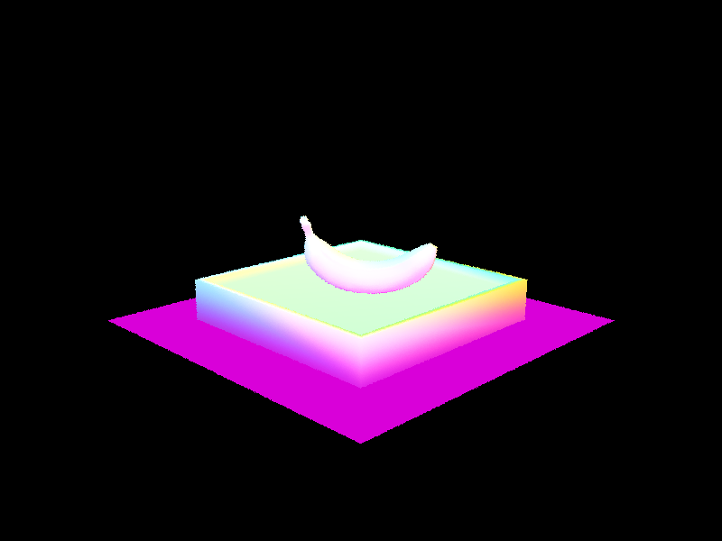
-

-

-
Part 2: Bounding Volume Hierarchy
-
Walk through your BVH construction algorithm. Explain the heuristic you chose for picking the splitting point.
- I start by computing a bounding box (
BBox) that encloses all primitives in the given range fromstarttoend. - I create a new
BVHNodewith this bounding box to serve as the current node. - Base case: If the number of primitives is less than or equal to
max_leaf_size, I make a leaf node:- Set the node’s
startandendto the primitive range. - Set left and right child pointers (
landr) toNULL. - Return the leaf node.
- Set the node’s
- Splitting heuristic: For non-leaf nodes, I choose the splitting point using the following approach:
- Determine the split axis by finding the longest dimension of the bounding box (
extent.x,extent.y, orextent.z). - Compute the centroid of the bounding box to use as a potential split point.
- Evaluate each axis (x, y, z) by partitioning primitives based on whether their centroid’s coordinate is less than or equal to the bounding box centroid’s coordinate along that axis.
- Choose the axis that minimizes the absolute difference in the number of primitives between the left and right partitions, ensuring neither is empty, to balance the tree.
- If no valid split is found (e.g., all primitives on one side), fall back to splitting the primitive list evenly by count.
- Determine the split axis by finding the longest dimension of the bounding box (
- Partitioning: I reorder the primitives in the input range:
- Primitives with centroids less than or equal to the split point go to the left partition.
- Others go to the right partition.
- Update the iterator pointers (
l_ptrandr_ptr) to reflect the new order.
- Recursion: I recursively construct the left and right child nodes:
- Left child: from
starttol_ptr. - Right child: from
l_ptrtoend.
- Left child: from
- Finally, I return the current node with its children set.
- I start by computing a bounding box (
-
Show images with normal shading for a few large .dae files that you can only render with BVH acceleration.
-
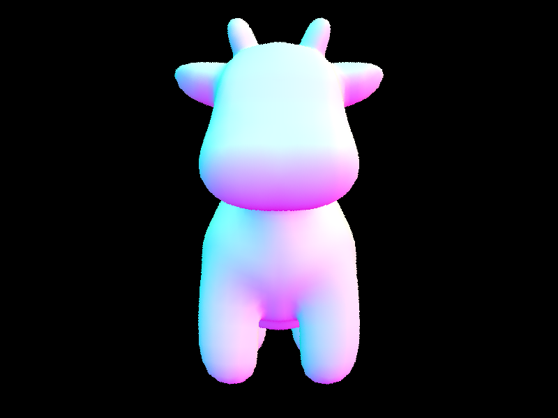
-
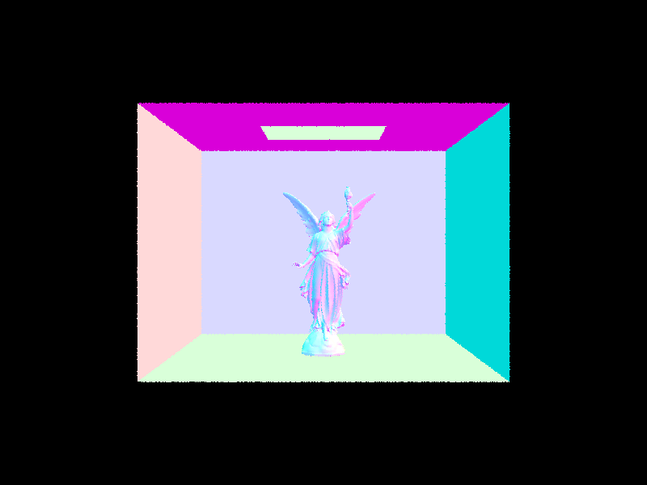
-
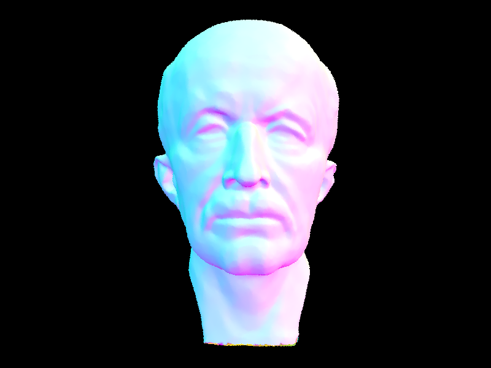
-
-
Compare rendering times on a few scenes with moderately complex geometries with and without BVH acceleration. Present your results in a one-paragraph analysis.
-
Rendering data collected using 8 threads.
- Cow. Collecting primitives in (0.0004 sec); nuilding BVH from 5856 primitives in (0.0001 sec); rendering in (2.7802s); BVH traced 440268 rays; average speed 0.1584 million rays per second; averaged 504.275625 intersection tests per ray.
- Using part 2 implementation. Collecting primitives in (0.0006 sec); building BVH from 5856 primitives... Done! (0.0012 sec); rendering... 100%! (0.0305s); BVH traced 159822 rays; average speed 5.2369 million rays per second; averaged 6.130989 intersection tests per ray.
- Max Plank. Collecting primitives in (0.0019 sec); building BVH from 50801 primitives in(0.0005 sec); rendering... 100%! (27.6279s); BVH traced 447167 rays; average speed 0.0162 million rays per second; averaged 4786.280940 intersection tests per ray.
- Using part 2 implementation. Collecting primitives in (0.0022 sec); building BVH from 50801 primitives... Done! (0.0126 sec); rendering... 100%! (0.0475s); BVH traced 152259 rays; average speed 3.2073 million rays per second; averaged 7.492398 intersection tests per ray.
- Lucy. Collecting primitives in (0.0077 sec); building BVH from 133796 primitives... Done! (0.0033 sec); rendering... 100%! (54.4721s); BVH traced 294271 rays; average speed 0.0054 million rays per second; averaged 12880.431769 intersection tests per ray.
- Using part 2 implementation. Collecting primitives in (0.0081 sec); building BVH from 133796 primitives in (0.0406 sec); rendering in (0.0351s); BVH traced 132281 rays; average speed 3.7674 million rays per second; averaged 7.105072 intersection tests per ray.
-
Analysis:
-
The Part 2 BVH implementation dramatically outperforms the original single-leaf BVH across the Cow, Max Plank, and Lucy scenes, reducing rendering times by orders of magnitude when using 8 threads.
For the Cow scene (5,856 primitives), rendering time dropped from 2.7802 seconds to 0.0305 seconds, with ray tracing speed increasing from 0.1584 to 5.2369 million rays per second and intersection tests per ray plummeting from 504.28 to 6.13. Similarly, the Max Plank scene (50,801 primitives) saw rendering time decrease from 27.6279 seconds to 0.0475 seconds, with speed rising from 0.0162 to 3.2073 million rays per second and tests per ray falling from 4,786.28 to 7.49. The Lucy scene (133,796 primitives) improved from 54.4721 seconds to 0.0351 seconds, with speed increasing from 0.0054 to 3.7674 million rays per second and tests per ray dropping from 12,880.43 to 7.11. Despite slightly longer BVH construction times (e.g., 0.0406 vs. 0.0033 seconds for Lucy), the recursive BVH structure significantly reduces intersection tests by culling non-intersecting primitives, enabling faster rendering and scaling efficiently with scene complexity.
-
Rendering data collected using 8 threads.
Part 3: Direct Illumination
-
Walk through both implementations of the direct lighting function.
- I implemented two direct lighting functions in
PathTracer:estimate_direct_lighting_hemisphereandestimate_direct_lighting_importance - estimate_direct_lighting_hemisphere:
- I create a local coordinate system at the intersection point using the surface normal.
- I compute the hit point and outgoing direction (
w_out) in local coordinates. - I sample
num_samplesdirections uniformly over the hemisphere usinghemisphereSampler. - For each sample:
- I transform the sample direction to world coordinates and cast a shadow ray.
- If the ray hits an object with emission (light source), I compute the BSDF, cosine term, and add the contribution:
emission * f * cos_theta / pdf. - If no intersection and an environment light exists, I use its emission along the ray direction.
- I average the contributions over all samples:
L_out / num_samples. - Note: The PDF is constant (
1 / (2 * PI)) due to uniform hemisphere sampling.
- estimate_direct_lighting_importance:
- I set up the same local coordinate system and compute the hit point and
w_out. - For each light in the scene:
- I use 1 sample for delta lights (e.g., point lights) and
ns_area_lightfor area lights. - For each sample, I call
light->sample_Lto get the incoming direction (wi_world), distance, PDF, and emitted radiance. - I check if the light is in front of the surface (
cos_theta > 0). - I cast a shadow ray with bounds set to avoid self-intersection and reach exactly the light’s distance.
- If unoccluded, I compute the BSDF and add the contribution:
L_emitted * f * cos_theta / pdf.
- I use 1 sample for delta lights (e.g., point lights) and
- If an environment light exists, I sample it similarly, using
ns_area_lightsamples. - I average contributions per light:
light_contrib / num_samples, summing them toL_out. - Note: The PDF is light-specific, derived from
sample_L, making this importance sampling.
- I set up the same local coordinate system and compute the hit point and
- Key Difference:
- Hemisphere sampling uses uniform sampling over the hemisphere, which is less efficient but simpler.
- Importance sampling directly samples light sources, reducing variance by focusing on directions likely to contribute radiance.
- I implemented two direct lighting functions in
-
Show some images rendered with both implementations of the direct lighting function.
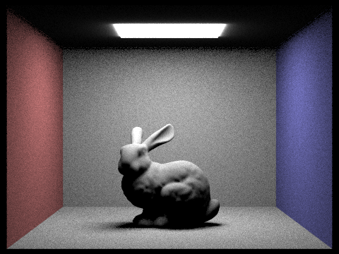 Hemisphere bunny 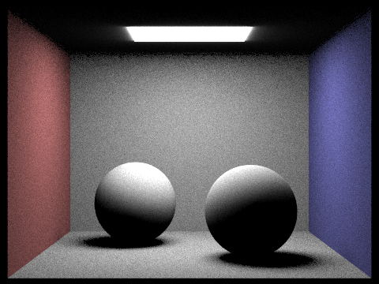 Hemisphere spheres 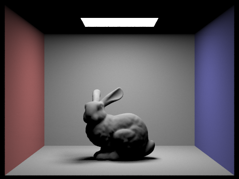 Importance bunny 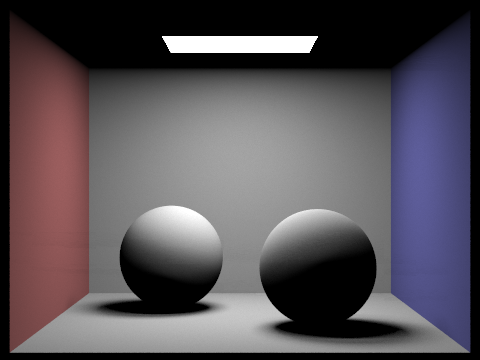 Importance spheres -
Focus on one particular scene with at least one area light and compare the noise levels in soft shadows when rendering with 1, 4, 16, and 64 light rays (the -l flag) and with 1 sample per pixel (the -s flag) using light sampling, not uniform hemisphere sampling.
- I rendered the scene with a rabbit model in a colored box, featuring a ceiling area light.
- Using light sampling (not uniform hemisphere) with 1 sample per pixel (-s 1) and varying light rays (-l flag):
- 1 light ray: High noise levels; soft shadows appear grainy with significant speckling around edges.
- 4 light rays: Noticeable reduction in noise; soft shadows start to smooth out, though speckles remain visible.
- 16 light rays: Further noise reduction; soft shadows are clearer, with minimal speckling, approaching a clean look.
- 64 light rays: Very low noise; soft shadows are smooth and well-defined, with almost no visible grain.
- Insight: Increasing light rays reduces variance in shadow sampling, as more rays better approximate the area light’s contribution, especially with only 1 sample per pixel limiting overall image quality.
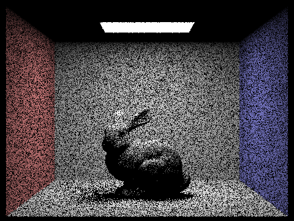 S1 L1 S1 L4 S1 L16 S1 L64 -
Compare the results between uniform hemisphere sampling and lighting sampling in a one-paragraph analysis.
- In the scenes I rendered (with a rabbit and two spheres under a ceiling area light), uniform hemisphere sampling shows higher noise levels and grainy soft shadows, as it randomly samples directions over the hemisphere, missing efficient light contributions and leading to uneven illumination on the rabbit and spheres.
- In contrast, lighting sampling produces smoother soft shadows and more consistent lighting, as it directly samples the area light, focusing on significant light sources and reducing variance, resulting in clearer details on the rabbit’s surface and better-defined sphere shadows.
- Insight: Lighting sampling outperforms uniform hemisphere sampling by prioritizing light source directions, which is more effective for scenes with distinct area lights, though it may require more rays to fully resolve complex lighting effects.
Part 4: Global Illumination
-
Walk through your implementation of the indirect lighting function.
- My
at_least_one_bounce_radiancefunction handles indirect lighting in the path tracer:- I check if the ray depth is valid (
r.depth < 0returns black). - I set up a local coordinate system using the surface normal and compute the hit point and outgoing direction (
w_out). - I initialize
L_outfor accumulating radiance.
- I check if the ray depth is valid (
- Direct Lighting:
- If
isAccumBouncesis true or it’s the first bounce (r.depth == 1), I add the one-bounce radiance usingone_bounce_radiance.
- If
- Indirect Lighting:
- I use Russian Roulette to decide whether to terminate the path with probability
termination_prob (0.3); if so, returnL_out. - I sample a new direction (
w_in) and PDF using the BSDF’ssample_f. - I transform
w_into world coordinates and create an indirect ray from the hit point. - I recursively trace the indirect ray, checking for intersections.
- If an intersection occurs, I compute the indirect contribution:
(f * L_indirect * cos_theta) / (pdf * continuation_prob), wherecos_thetais the dot product with the normal. - I add this contribution to
L_out.
- I use Russian Roulette to decide whether to terminate the path with probability
- Return: I return the total radiance
L_out, combining direct and indirect contributions. - Insight: Russian Roulette controls recursion depth, balancing computation and accuracy by terminating paths probabilistically.
- My
-
Show some images rendered with global (direct and indirect) illumination. Use 1024 samples per pixel.
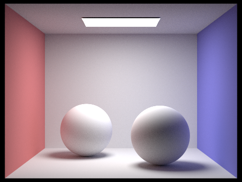 Spheres, m5, accum = True, sample = 1024, roulette = 0.3 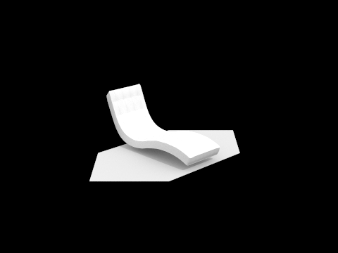 Bench, m5, accum = True, sample = 1024, roulette = 0.3 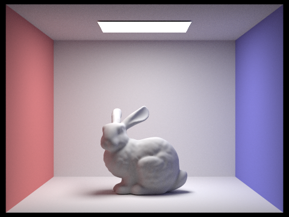 Bunny, m5, accum = True, sample = 1024, roulette = 0.3 -
Pick one scene and compare rendered views first with only direct illumination, then only indirect illumination. Use 1024 samples per pixel. (You will have to edit PathTracer::at_least_one_bounce_radiance(...) in your code to generate these views.)
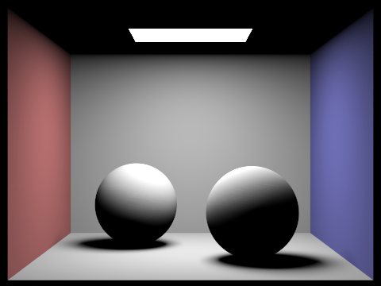 Spheres, direct, m5, accum = True, sample = 1024, l = 16, roulette = 0.3 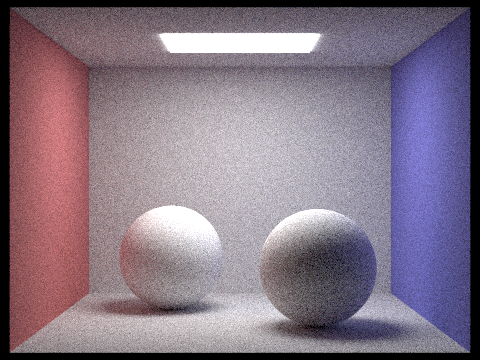 Spheres, indirect, m5, accum = True, sample = 1024, l = 16, roulette = 0.3 - I selected the scene with two spheres in a colored box under a ceiling area light.
- Direct Illumination Only (1024 samples per pixel):
- Edited
at_least_one_bounce_radianceto return onlyone_bounce_radiance(r, isect)within theif (isAccumBounces || r.depth == 1)condition, disabling indirect lighting. - The render shows sharp lighting from the area light, with clear soft shadows under the spheres, but no color bleeding from the red and blue walls.
- Edited
- Indirect Illumination Only (1024 samples per pixel):
- Modified
at_least_one_bounce_radianceto setL_outtozero_bounce_radiance(r, isect)(zero for non-emissive surfaces) and compute only indirect lighting via recursion, removing direct contribution. - The render reveals subtle color bleeding, with faint red and blue tones on the spheres and floor, though the overall brightness is lower due to the absence of direct light.
- Modified
- Insight: Direct illumination defines the primary light and shadow structure, while indirect illumination adds realistic color interactions, with 1024 samples ensuring minimal noise in both views.
-
For CBbunny.dae, render the mth bounce of light with max_ray_depth set to 0, 1, 2, 3, 4, and 5 (the -m flag), and isAccumBounces=false. Explain in your write-up what you see for the 2nd and 3rd bounce of light, and how it contributes to the quality of the rendered image compared to rasterization. Use 1024 samples per pixel.
Compare rendered views of accumulated and unaccumulated bounces for CBbunny.dae with max_ray_depth set to 0, 1, 2, 3, 4, and 5 (the -m flag). Use 1024 samples per pixel.
Bunny, accum true, s1024, m0, no roulette Bunny, accum true, s1024, m1, no roulette Bunny, accum true, s1024, m2, no roulette Bunny, accum true, s1024, m3, no roulette Bunny, accum true, s1024, m4, no roulette Bunny, accum true, s1024, m5, no roulette 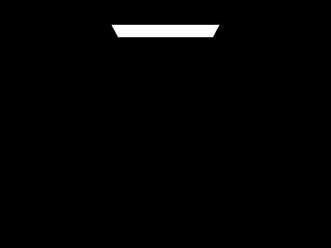 Bunny, accum false, s1024, m0, no roulette 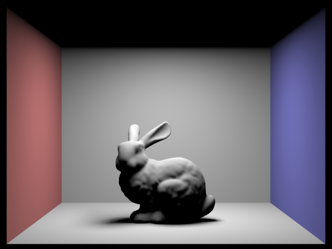 Bunny, accum false, s1024, m1, no roulette 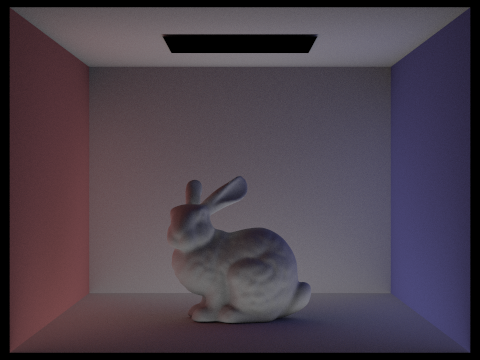 Bunny, accum false, s1024, m2, no roulette 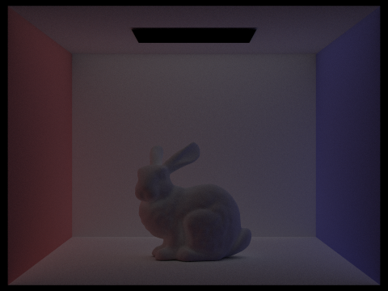 Bunny, accum false, s1024, m3, no roulette 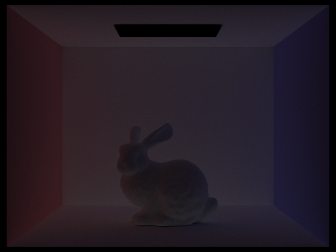 Bunny, accum false, s1024, m4, no roulette 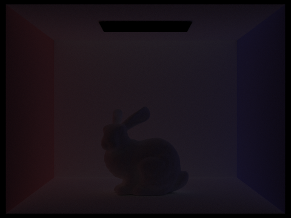 Bunny, accum false, s1024, m5, no roulette - The reneders I have produced to do not seem correct. With accumBounces set to True, renders seem identical regardless of the depth m.
- Nevertheless, I would still like to write what output I have expected and tried to achieve.
- Expected rendering the mth Bounce with max_ray_depth 0, 1, 2, 3, 4, and 5 (-m flag, isAccumBounces=false, 1024 samples):
- Max Ray Depth 0: Only the 0th bounce (direct illumination); the rabbit is lit solely by the area light, with sharp shadows and no indirect effects.
- Max Ray Depth 1: Includes the 1st bounce; some indirect light from walls begins to affect the rabbit, adding faint red and blue tones.
- Max Ray Depth 2: Includes the 2nd bounce; noticeable color bleeding from the red and blue walls onto the rabbit and floor, enhancing realism slightly.
- Max Ray Depth 3: Includes the 3rd bounce; richer color bleeding and subtle light diffusion, with more detailed indirect contributions.
- Max Ray Depth 4: Includes the 4th bounce; smoother color transitions and increased indirect lighting, refining the scene’s ambiance.
- Max Ray Depth 5: Includes the 5th bounce; further polished indirect effects, with maximum detail for this depth, though diminishing returns may occur.
- Expected Observations for 2nd and 3rd Bounce:
- 2nd Bounce: Shows initial color bleeding from the walls onto the rabbit, particularly on its sides facing the red and blue surfaces, adding a soft gradient that suggests light reflection.
- 3rd Bounce: Enhances the 2nd bounce with deeper color penetration and light scattering, visible as more uniform tones on the rabbit and floor, indicating multiple reflections.
- Contribution to Quality: Compared to rasterization, which uses direct lighting only and lacks indirect effects, these bounces add realism through global illumination, capturing soft shadows, color bleeding, and light diffusion that rasterization cannot replicate, improving depth and naturalism with 1024 samples reducing noise.
- Unaccumulated (isAccumBounces=false): Each render shows only the light up to the specified max_ray_depth (e.g., depth 2 includes 0th, 1st, and 2nd bounces); brightness decreases with depth as indirect contributions dominate, with clear progression in color bleeding.
- Accumulated (isAccumBounces=true): Includes all bounces up to max_ray_depth plus zero-bounce radiance; renders are brighter and more consistent, as each depth builds on previous ones, showing cumulative indirect effects from the start.
- Difference: Unaccumulated views isolate bounce contributions, useful for analysis, while accumulated views provide a more natural, converged result, resembling final renders, with 1024 samples ensuring clarity in both cases.
- Higher bounces and accumulation enhance realism over rasterization by modeling global illumination, with accumulation offering a practical rendering approach versus the analytical breakdown of unaccumulated bounces.
-
For CBbunny.dae, output the Russian Roulette rendering with max_ray_depth set to 0, 1, 2, 3, 4, and 100(the -m flag). Use 1024 samples per pixel.

Bunny, m0, accum = True, sample = 1024, roulette = 0.3 Bunny, m1, accum = True, sample = 1024, roulette = 0.3 Bunny, m2, accum = True, sample = 1024, roulette = 0.3 Bunny, m3, accum = True, sample = 1024, roulette = 0.3 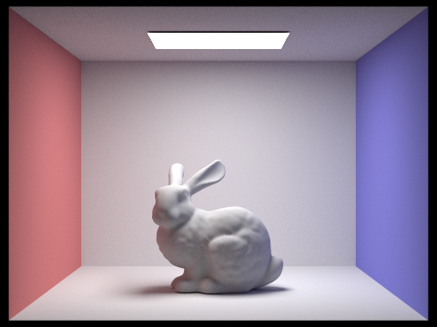 Bunny, m4, accum = True, sample = 1024, roulette = 0.3 
Bunny, m100, accum = True, sample = 1024, roulette = 0.3 -
Pick one scene and compare rendered views with various sample-per-pixel rates, including at least 1, 2, 4, 8, 16, 64, and 1024. Use 4 light rays.
You will probably want to use the instructional machines for the above renders in order to not burn up your own computer for hours.
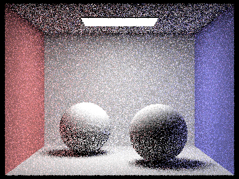 Spheres, s1, l4 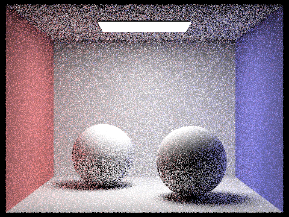 Spheres, s2, l4 Spheres, s4, l4 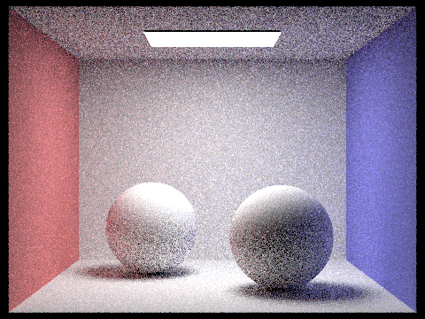 Spheres, s8, l4 Spheres, s16, l4 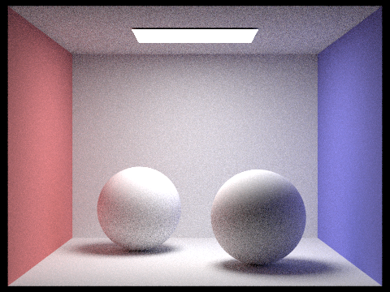 Spheres, s64, l4 Spheres, s1024, l4 - I selected the scene with two spheres in a colored box under a ceiling area light.
- Using 4 light rays and varying samples per pixel (ns_aa):
- 1 sample: High noise; spheres and shadows are grainy, with visible speckling across the scene.
- 2 samples: Slightly reduced noise; speckles lessen, but shadows and sphere surfaces remain rough.
- 4 samples: Noticeable improvement; noise decreases, and soft shadows start to smooth out.
- 8 samples: Further reduction in noise; shadows and sphere details become clearer.
- 16 samples: Low noise levels; soft shadows are well-defined, with minimal grain.
- 64 samples: Very smooth rendering; shadows and sphere surfaces are clean, with little visible noise.
- 1024 samples: Nearly noise-free; shadows are crisp, and sphere textures are fully resolved.
- Insight: Increasing samples per pixel reduces variance, improving image quality, especially in soft shadows, with 1024 samples providing the best clarity at the cost of higher computation time.
Part 5: Adaptive Sampling
- Adaptive Sampling Explained:
- Adaptive sampling adjusts the number of samples per pixel based on convergence, focusing computation where needed to reduce noise efficiently.
- It uses statistical measures (e.g., confidence intervals) to decide when a pixel’s radiance estimate is reliable, stopping early in uniform areas and sampling more in complex regions.
- My Implementation Walkthrough:
- I initialize counters:
nfor total samples,sum_radiancefor accumulated radiance, and running sumss1ands2for mean and variance. - I iterate in batches (up to
samplesPerBatch) untilns_aais reached or convergence is achieved. - For each sample:
- I generate a ray with offset using
gridSampler. - I compute radiance with
est_radiance_global_illuminationand updatesum_radiance,s1, ands2. - I increment
n.
- I generate a ray with offset using
- After at least 2 samples, I calculate:
- Mean radiance:
s1 / n. - Variance:
(s2 - (s1 * s1) / n) / (n - 1.0). - Standard deviation:
sqrt(variance). - Confidence interval half-width:
1.96 * stddev / sqrt(n)(95% confidence).
- Mean radiance:
- I check convergence: if the interval
Iis ≤maxTolerance * mean, I setconverged = true. - I compute the average radiance
avg = sum_radiance / n, update the buffer, and store the sample count.
- I initialize counters:
- Overall: This approach optimizes rendering by adapting sample counts, ensuring quality where variance is high while saving time in stable areas.
-
Pick two scenes and render them with at least 2048 samples per pixel. Show a good sampling rate image with clearly visible differences in sampling rate over various regions and pixels. Include both your sample rate image, which shows your how your adaptive sampling changes depending on which part of the image you are rendering, and your noise-free rendered result. Use 1 sample per light and at least 5 for max ray depth.
Bunny, s 2048, l 1, m 5, no roulette 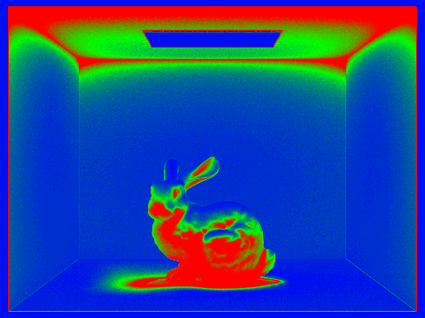 Rate image Spheres, s 2048, l 1, m 5, no roulette 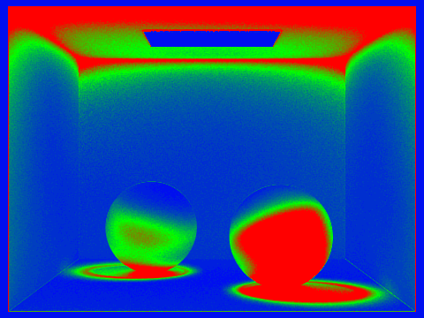 Rate image
AI Acknowledgement
-
You must acknowledge each use of AI in your homework and project reports, describe in detail how you used the tools, and describe what you learned.
- The only AI used for this project is Grok
- The code/functions generated by Grok never worked from the first try so I had to fix them. The benefit was that it helped me get started: if the task implementation uses other parts of code I do not understand well or relies on a concept I did not yet master clearly, having a partially correct code skeleton with correct calls to relevant methods and objects was useful.
-
Requested explanations of concepts:
- "Please explain intuitively the essence of ray tracing"
- "Please explain what global illumination does"
- "Please intuitively explain how adaptive sampling works"
-
Asked for help with my code:
- Understanding the concepts: "Give me a high-level overview of the BVH construction algorithm"
- Fixing the code I write: "Please take a look at my hemisphere lighting function code and tell me what mistakes I have made"
- Starting the code draft when I am not sure where to start and what to interact with: "I am not sure where to start from to complete my programming task. Analyzie the .h and .cpp files I submit and try to complete the missing functions. Explain the underlying logic and the code methods/objects/constructors that are relevant."
-
Asking for help to create my write-up:
- Organizing the text and info I write: "Please organize this text ... into bullet points with HTML syntax using ul and li tags"
- Verifying and interpretting my results: "I am not sure what the expected result should be with my renders. Please take a look at the images I rendered using direct and hemisphere lighting and tell me if the differences are as expected."
-
What I have learned:
- I still had to learn all the fundamental concepts of this project: ray tracing, BVH, direct & global illumination, adaptive sampling. For each part of the project, I understood the underlying algorithm and code implementation submitted. I would later re-implement ray tracing and use BVH acceleration for my final project in CS 184 (the project is "Galaxy Editor")
- I also had to learn new technology: using SSH to complete my renders before the submission deadline